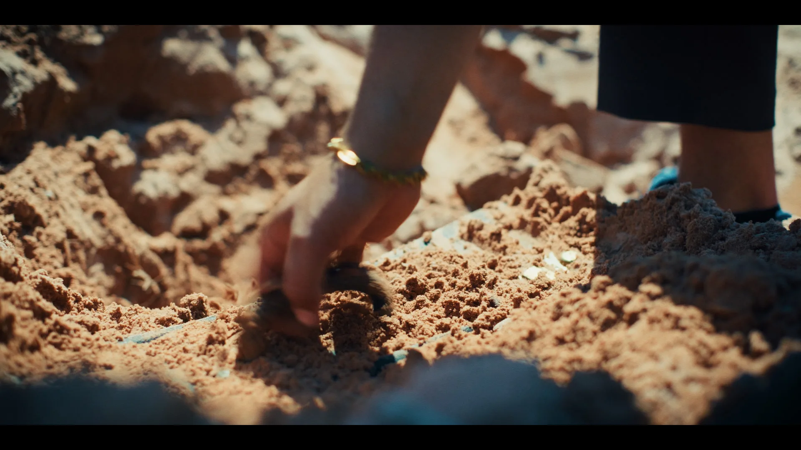

Teaser Triple Visage
Le teaser 3 min
L'univers du projet
Premier épisode d'une série de trois teasers, chacun consacré à un des visages d'Abdel. Trois fragments qui se répondent, portés par une narration suivie, et qui mèneront à terme à un court-métrage de fiction tourné dans le même univers. Ici, on pose la première pierre : un homme, une carrière interdite, une mallette enterrée sous le sable.
Crédits
Un teaser pour lancer une carrière d'acteur
Le client est comédien. Il voulait un film court pour se présenter, lancer sa carrière d'acting et démarcher ensuite avec un objet concret à montrer. Pas un casting filmé à plat, pas une bande démo classique : une vraie intention de fiction, capable de donner envie de le revoir. L'objectif, c'est qu'on retienne une présence.
Il est acteur, et il avait aussi des idées de mise en scène. On a travaillé ensemble, mais la réalisation, le regard et la direction artistique, c'était moi. Lui devant la caméra, moi derrière : chacun à sa place, pour que le film tienne.
Un mois pour tout cadrer avant le jour J
Un teaser de trois minutes tourné en une journée ne s'improvise pas. On a pris environ un mois de préparation : repérage des décors, découpage technique plan par plan, et de longues discussions avec le comédien pour comprendre ce qu'il voulait dégager et ce qu'on voulait raconter.
Plus la préparation est solide, plus le tournage est libre. Quand on sait exactement où on filme, comment et avec quelle intention, on peut se permettre de tenter, d'ajuster, de laisser vivre un moment qui n'était pas prévu mais qui fonctionne. C'est là que naît le vrai.
Premier épisode d'une trilogie
Le titre, Triple Visage, annonce le projet entier : trois teasers, trois facettes d'Abdel, une narration qui se déploie d'un épisode à l'autre. Celui-ci est le premier fragment. Les deux suivants viendront compléter le tableau, et l'ensemble nourrira un court-métrage de fiction, plus long, plus écrit, ancré dans le même univers.
Un homme. Une carrière interdite. Une mallette enterrée sous le sable.
Il a tout pour fuir. Mais on revient toujours là où on a enterré ce qu'on est.
Premier fragment d'une histoire à venir.
Un teaser, par définition, doit laisser sur sa faim. Ici, l'enjeu est double : faire exister un personnage, et poser les premières pierres d'un univers qu'on aura envie de retrouver.
Une journée, une équipe légère de deux personnes
Tournage en une seule journée, avec une équipe technique de deux personnes sur le terrain. Une équipe réduite, mais rendue efficace par la préparation : chaque plan était déjà décidé, on savait où aller. Le comédien, lui, n'avait plus qu'à jouer.
Travailler léger, ce n'est pas travailler moins bien. C'est rester mobile, réactif, proche de l'acteur, et garder de la place pour l'imprévu utile.
C'est au montage que le teaser prend sa forme
Le gros du travail s'est joué après le tournage. Un montage long et précis pour trouver le rythme juste, et un étalonnage poussé pour installer l'ambiance et l'identité visuelle du film. Sur un teaser, chaque coupe compte : il faut tenir l'attention de bout en bout et finir sur ce qui donne envie d'en savoir plus.
Le livrable est un teaser de trois minutes que le comédien peut présenter partout, dans ses démarches et ses castings. Un outil de carrière, pas juste une vidéo. Pour voir d'autres approches de fiction et d'image, regardez notre film artistique ou nos pages film publicitaire et vidéo promotionnelle.
Un teaser, un court métrage, un projet de fiction ? Que vous soyez comédien, auteur ou porteur d'un projet, parlons-en en 15 minutes.


Vous souhaitez un film similaire ?
Dites-nous ce que vous voulez construire. On vous dit comment on peut le faire.
Parlons-en